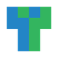

Заощадження часопростору у київському метро
Натисніть на станцію, і отримаєте вагон та двері, які будуть якнайближче до виходу з підземки
Для швидкого доступу додавайте станції та окремі виходи до Вибраного
Відмічайте виходи, якими скористались. Переглядайте статистику Check‑in‑ів
Виправляйте неточності та підписуйте виходи з метро
Дякую. Напишемо!
Правки застосуються локально та надійдуть розробнику
Правки, внесені через меню Запропонувати зміни, не надходитимуть як пропозиції розробнику
Чекіньтесь на станціях метро, відмічаючи виходи, якими скористались. Натисніть шпильку, щоб позначити вихід як відвіданий.